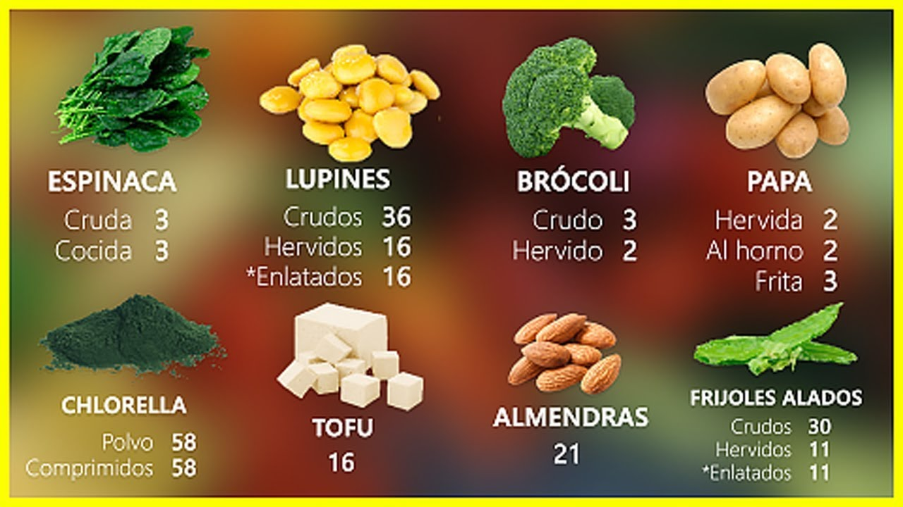

Frutas y Vegetales a Domicilio | Vegetales24
2020.09.14 13:19

#Ô∏è‚É£QuedateEnCasa üöö Los despachos lo s hacemos en 3 Horas .
#Ô∏è‚É£QuedateEnCasa üöö Los despachos lo s hacemos en 3 Horas .
Inicio Blog Tienda Ingreso / RegistroLogueo Crear una cuenta
0 items / $ 0.00 Menu 0 items / $ 0.00 Vegetales24 BAG’S Frutas Vegetales Keto Jugos Panader√≠a Al Vac√≠o Hojas y Tallos Artesanal Granos Frutos Secos Mascotas
Nuestras BAG’S:
BAG Añadir al carrito CerrarBAG Pa el Dia
BAG'S $ 12.00 BAG Añadir al carrito CerrarBAG Pa la Sopa
BAG'S $ 11.00 Popular BAG Añadir al carrito CerrarBAG Pa la Quincena
BAG'S $ 30.00 BAG Añadir al carrito CerrarBAG Pa la Semana
BAG'S $ 20.00 Mas Bag sUna pasión por la fruta y verdura, un modelo de negocio que encaja perfectamente con la tradición Panameña
Productos de La Finca
Trabajamos con productores serios y responsables comprometidos con tu salud y el medio ambiente. Productos frescos traídos directamente desde el corazón de cada una de sus Fincas, aprovechando la temporada de cada variedad.Nuestros Jugos:
Unidad Añadir al carrito CerrarJugo Naranja Raspadura
Jugos $ 1.50 Unidad Añadir al carrito CerrarJugo Naranja Piña
Jugos $ 2.00 Unidad Añadir al carrito CerrarJugo Papaya Piña
Jugos $ 2.00 Oferta Unidad Añadir al carrito CerrarJugo Naranja Remolacha Zanahoria
Jugos $ 2.50 $ 2.00 Oferta Unidad Añadir al carrito CerrarJugo Naranja Zanahoria
Jugos $ 2.50 $ 2.00 Unidad Añadir al carrito CerrarJugo Verde
Jugos $ 3.00 Oferta Nuevo Unidad Añadir al carrito CerrarConcentrado de Limón
Jugos $ 6.99 $ 5.99 Oferta Añadir al carrito CerrarPack de 4 Jugos Naturales
Jugos $ 9.00 $ 7.50 Oferta Unidad Añadir al carrito CerrarJugo Naranja Natural
Jugos $ 2.00 $ 1.50 Mas Jugos!Recolección
Seleccionamos los mejores productos agroalimentarios que cumplen con las más altas normas de calidad
Procesamiento
Para su comercialización y preservación, las frutas y los vegetales son sometidos a diversos procesos.
Entrega
Recién cosechadas, frutas y vegetales de nuestra finca a tu casa.
Healthy Growers:
Mas Healthy GrowersFrutas y vegetales recién cosechadas, directamente de las fincas de nuestros productores aliados a tu casa.
Te llevamos las mejores frutas y vegetales a domicilio, sin intermediarios a la puerta de tu casa.
Frutas:
Unidad Añadir al carrito CerrarPapaya Picada
Frutas $ 1.50 PAQUETE Más información CerrarLimon Mandarina Paquete de 5 unidades
Frutas Unidad Añadir al carrito CerrarToronja Importada
Frutas $ 1.00 Unidad Añadir al carrito CerrarPapaya Piña Picada
Frutas $ 1.50 Unidad Añadir al carrito CerrarPulpa de Maracuya
Frutas $ 2.50 Agotado Unidad Más información CerrarNaranja Navel Importada
Frutas $ 0.62 Nuevo Unidad Añadir al carrito CerrarLimón Amarillo Importado
Frutas $ 0.60 Libra Añadir al carrito CerrarBanana Verde
Frutas $ 0.55 Unidad Añadir al carrito CerrarCoco Entero
Frutas $ 1.15 Nuevo Unidad Añadir al carrito CerrarPiña Picada
Frutas $ 1.50 Unidad Añadir al carrito CerrarKiwi
Frutas $ 0.52 Nuevo Unidad Añadir al carrito CerrarMango Picado
Frutas $ 2.00 Mas FrutasVegetales:
Agotado Unidad Más información CerrarAji Chombo
Vegetales $ 0.90 Agotado Nuevo Libra Más información CerrarAji Dulce o Criollo
Vegetales $ 2.00 Oferta Libra Añadir al carrito CerrarAji Natali
Vegetales $ 1.10 $ 1.02 Oferta Unidad Añadir al carrito CerrarAjo en Tira
Vegetales $ 1.35 $ 1.09 PAQUETE Añadir al carrito CerrarAjo Pelado
Al Vacío , Vegetales $ 1.28 Unidad Añadir al carrito CerrarBastones de Apio
Al Vacío , Vegetales $ 1.95 Libra Añadir al carrito CerrarBastones de Camote o Batata
Al Vacío , Vegetales $ 2.25 Unidad Añadir al carrito CerrarBastones de Zanahoria
Al Vacío , Vegetales $ 1.75 Añadir al carrito CerrarBastones Mixtos Apio/Zanahoria
Al Vacío , Vegetales $ 2.25 Libra Añadir al carrito CerrarBerenjena Gorda
Vegetales $ 1.25 Libra Añadir al carrito CerrarBerenjena Larga
Vegetales $ 1.25 Unidad Añadir al carrito CerrarBolsa maíz Nuevo 3 Unidades
Vegetales $ 1.15 Mas VegetalesUn servicio a tu medida
Te ofrecemos un trato personalizado y dispondrás de un contacto directo para realizar cualquier tipo de gestión. Podrás programar día y franja horaria en la que quieres recibir tu pedido.
Solo entregamos productos de calidad
Toda la fruta y verdura pasa por rigurosos controles de calidad y sanitarios antes de llegar a tu oficina. Contamos con todas certificaciones sanitarias, que te mostraremos encantados si lo deseas.
Al Vacío:
PAQUETE Añadir al carrito CerrarAjo Pelado
Al Vacío , Vegetales $ 1.28 Unidad Añadir al carrito CerrarBastones de Apio
Al Vacío , Vegetales $ 1.95 Libra Añadir al carrito CerrarBastones de Camote o Batata
Al Vacío , Vegetales $ 2.25 Unidad Añadir al carrito CerrarBastones de Zanahoria
Al Vacío , Vegetales $ 1.75 Añadir al carrito CerrarBastones Mixtos Apio/Zanahoria
Al Vacío , Vegetales $ 2.25 Unidad Añadir al carrito CerrarBolsa Sopera al Vacio
Al Vacío , Vegetales $ 1.86 Unidad Añadir al carrito CerrarChayote al Vacio
Al Vacío , Vegetales $ 1.25 Nuevo Unidad Añadir al carrito CerrarCoco al vacío
Al Vacío , Frutas $ 1.65 Agotado Libra Más información CerrarColiflor Al vació Congelado
Al Vacío , Vegetales , Vegetales24 $ 4.00 Unidad Añadir al carrito CerrarÑame al Vacio
Al Vacío , Vegetales $ 1.86 Oferta Unidad Añadir al carrito CerrarOtoe al Vacío
Al Vacío , Vegetales $ 1.55 $ 1.35 Nuevo Unidad Añadir al carrito CerrarPapitas al Vacio
Al Vacío , Vegetales $ 1.60 Mas Al VacíoArtesanal:
Unidad Añadir al carrito CerrarAceite de Soya
Artesanal $ 2.25 Agotado Unidad Más información CerrarBolitas de Tamarindo (20 unidades)
Artesanal $ 5.00 Agotado Nuevo Unidad Más información CerrarBollos de Coco
Artesanal $ 2.60 Agotado Nuevo Unidad Más información CerrarBollos de Mantequilla
Artesanal $ 2.50 Unidad Añadir al carrito CerrarBollos Maiz Nuevo
Artesanal $ 2.25 Agotado Nuevo Unidad Más información CerrarCafé del Teriá
Artesanal $ 10.00 Nuevo Unidad Añadir al carrito CerrarCafé la Jabita
Artesanal $ 12.00 Nuevo Unidad Añadir al carrito CerrarCafé Panama Joe
Artesanal $ 15.00 Agotado Nuevo Unidad Más información CerrarCarne de Res Ahumada en leña de Nance
Artesanal $ 16.00 Oferta Agotado Unidad Más información CerrarCerdo Ahumado en Leña de Nance
Artesanal $ 13.00 $ 10.00 Agotado Unidad Más información CerrarCerdo Ahumado en Leña de Nance + Yuca al Vacio
Artesanal $ 6.99 Agotado Unidad Más información CerrarChoriza Tableña
Artesanal $ 6.25 Mas Artesanal!Contacto
Una pasión por la fruta y verdura, un modelo de negocio que encaja perfectamente con la tradición Panameña.
Betania, PTY, PanamaCell: (507) 6998-6070
Cell: (507) 830-6070
Mail: info@vegetales24.com
Post Recientes
10 usos y Beneficios del aceite de Coco para la Salud
23/08/2020 No CommentsLimones confitados
28/06/2020 No CommentsCategorías
Al Vacío 16 Artesanal 37 Frutos Secos 1 Granos 8 Hojas y Tallos 18 Jugos 9 Keto 5 Mascotas 4 Panadería 4 Vegetales24 102 BAG'S 4 Frutas 36 Vegetales 62Links de Interés
Politicas de Entrega y Devoluciones Terms & CondicionesBuscar Productos
Tienda Mi Cuenta Contacto
Carrito
cerrar Menu Categor√≠as Vegetales24 BAG’S Frutas Vegetales Keto Jugos Panader√≠a Al Vac√≠o Hojas y Tallos Artesanal Granos Frutos Secos Mascotas Inicio Blog Tienda Ingreso / Registro Scroll To Top- Importancia de los Vegetales
- 253 mejores imágenes de Laminas de Vegetales y Legumbres ...
- Vegetales | Vegetales24
- 'Chips' vegetales: ¿son más sanas que las patatas fritas ...
- Albóndigas vegetales -Mejor Con Salud-
- Vegetales – Incalfer
- Vallejo Frutas y Vegetales
- Frutas y Vegetales en Inglés - Abingles.com
- VEGGIE PACK Panamá – Delivery de Vegetales y Frutas Frescas
- Nombres de Vegetales en Español [Verduras y Vegetales Verdes]
- Importancia de los Vegetales
Vegetables | Vegetales . Spain's finest vegetables can now grace your dinner table. Choose from such popular brands as Viter, Mamia, and more. These vegetables are especially delicious when accompanying your favorite fish, meat or poultry dish. Hida Roasted Piquillo Peppers With Fried Tomato Net.Wt 340 Gr.
- 253 mejores imágenes de Laminas de Vegetales y Legumbres ...
Los vegetales en ambos casos son remolacha, boniato y chirivía; y —según dicen los paquetes— no tienen ni sabores ni colorantes añadidos. Es cierto, al igual que en la anterior, el gusto de ...
- Vegetales | Vegetales24
Los vegetales que hoy consumimos, tanto frutas como verduras en su enorme diversidad, han sido alguna vez domesticadas por diferentes grupos de seres humanos: mientras en Europa siempre fue central el trigo, en América se había desarrollado profundamente el cultivo del maíz.En la actualidad, cada región del planeta posee un detallado calendario de plantación de vegetales que tiene que ver ...
- 'Chips' vegetales: ¿son más sanas que las patatas fritas ...
Hay algunos vegetales que simplemente crecen mejor, más rápido y más abundante en macetas! Por esto hemos decidido juntar los mejores 20 vegetales para cultivar en macetas. Esto no requiere espacio de jardín, así que incluso si vives en un apartamento, un balcón debería ser más que suficiente para cultivar cualquiera de estos! Vegetales Para Cultivar En Macetas #1.
- Albóndigas vegetales -Mejor Con Salud-
B Vegetales. Perejil Por 200gr $ 1.25. Frutas. Quick View. Frutas, Otros Productos. Jugo de Naranja Por 1/2 Galon $ 5.25. Añadir a la lista de deseos. Añadir al carrito. Quick View. Frutas. Papaya Por Unidad $ 1.75. Añadir a la lista de deseos. Añadir al carrito. Quick View. Frutas. Kiwi Por Unidad $ 0.50. Añadir a la lista de deseos ...
- Vegetales – Incalfer
Aunque el pescado es una buena fuente de ácidos grasos omega-3, también se pueden encontrar en muchos vegetales como las coles de Bruselas, col rizada, espinacas y ensalada de verduras de hojas. Alimentos ricos en vitamina E.
- Vallejo Frutas y Vegetales
Frutas y vegetales en el idioma inglés. Como se escriben y como se dicen en ingles
- Frutas y Vegetales en Inglés - Abingles.com
Frutas y verduras que son contables Todo lo que sea contable podemos expresarlo como una determinada cantidad: - O nion (cebolla) - Grape (uva) - Pear (pera) - P each (durazno) - R adish (rábano) - E ggplant (berenjena) - P epper (pimentón) - P ineapple (Piña) - B anana (cambur) - Orange (naranja)
- VEGGIE PACK Panamá – Delivery de Vegetales y Frutas Frescas
Pronunciación en inglés de vegetables. Aprende a pronunciar vegetables en inglés con videos, audio y desgloses silábicos de los Estados Unidos y el Reino Unido.
- Nombres de Vegetales en Español [Verduras y Vegetales Verdes]
Las líneas para procesado de vegetales ofrecen la más moderna tecnología para procesos contínuos, adaptados a las necesidades de producción y posibilidades económicas de los procesadores de vegetales. El diseño modular y la gran variedad de equipos disponibles permiten configurar la línea ideal para cada aplicación.
Vegetables | Vegetales . Spain's finest vegetables can now grace your dinner table. Choose from such popular brands as Viter, Mamia, and more. These vegetables are especially delicious when accompanying your favorite fish, meat or poultry dish. Hida Roasted Piquillo Peppers With Fried Tomato Net.Wt 340 Gr.
Los vegetales en ambos casos son remolacha, boniato y chirivía; y —según dicen los paquetes— no tienen ni sabores ni colorantes añadidos. Es cierto, al igual que en la anterior, el gusto de ...
Los vegetales que hoy consumimos, tanto frutas como verduras en su enorme diversidad, han sido alguna vez domesticadas por diferentes grupos de seres humanos: mientras en Europa siempre fue central el trigo, en América se había desarrollado profundamente el cultivo del maíz.En la actualidad, cada región del planeta posee un detallado calendario de plantación de vegetales que tiene que ver ...
Hay algunos vegetales que simplemente crecen mejor, más rápido y más abundante en macetas! Por esto hemos decidido juntar los mejores 20 vegetales para cultivar en macetas. Esto no requiere espacio de jardín, así que incluso si vives en un apartamento, un balcón debería ser más que suficiente para cultivar cualquiera de estos! Vegetales Para Cultivar En Macetas #1.
B Vegetales. Perejil Por 200gr $ 1.25. Frutas. Quick View. Frutas, Otros Productos. Jugo de Naranja Por 1/2 Galon $ 5.25. Añadir a la lista de deseos. Añadir al carrito. Quick View. Frutas. Papaya Por Unidad $ 1.75. Añadir a la lista de deseos. Añadir al carrito. Quick View. Frutas. Kiwi Por Unidad $ 0.50. Añadir a la lista de deseos ...
Aunque el pescado es una buena fuente de ácidos grasos omega-3, también se pueden encontrar en muchos vegetales como las coles de Bruselas, col rizada, espinacas y ensalada de verduras de hojas. Alimentos ricos en vitamina E.
Frutas y vegetales en el idioma inglés. Como se escriben y como se dicen en ingles
Frutas y verduras que son contables Todo lo que sea contable podemos expresarlo como una determinada cantidad: - O nion (cebolla) - Grape (uva) - Pear (pera) - P each (durazno) - R adish (rábano) - E ggplant (berenjena) - P epper (pimentón) - P ineapple (Piña) - B anana (cambur) - Orange (naranja)
Pronunciación en inglés de vegetables. Aprende a pronunciar vegetables en inglés con videos, audio y desgloses silábicos de los Estados Unidos y el Reino Unido.
Las líneas para procesado de vegetales ofrecen la más moderna tecnología para procesos contínuos, adaptados a las necesidades de producción y posibilidades económicas de los procesadores de vegetales. El diseño modular y la gran variedad de equipos disponibles permiten configurar la línea ideal para cada aplicación.
